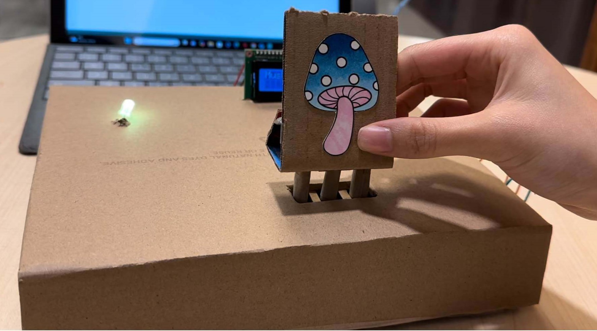

Design Fiction
In the year 2050, Earth has undergone a dramatic transformation. Decades of neglect in taking care of the environment has resulted in a catastrophic shift that has altered ecosystems worldwide. Rising temperatures, extreme weather events, and melting polar ice caps have led to a chain reaction that has wiped out most familiar plant and animal species. In their place, resilient new species have emerged; plants and animals adapted to the altered environment. Although humans have survived, the life that they knew is long gone and if they want to continue living on Earth, they know they have to significantly change their way of living. In this world, technology has been redirected to serve sustainability and ecological balance. Innovations like SustainaBite have emerged, assisting humans in their daily life without harming the planet.
Skyscrapers are now riddled with vertical forests and the streets are lined with unfamiliar trees bearing fruit. The air has the scent of new blossoms and the sound of different creatures looms in the night. Society has adapted and embraced this change, making sustainability and harmony with nature a core value, something they should have done long back.
An anecdotal story
Maria, a former chef, stands in her kitchen overlooking the overgrown cityscape. The recipes passed down from her grandmother are now impractical and useless in a world where wheat and tomatoes are distant memories. She places an unfamiliar root vegetable on her SustainaBite, watching as the devices analyze it and telling her if it has a name or if it is an unknown plant. The surface of the SustainaBite glows a gentle green, signaling to her that this vegetable is safe to consume. She then looks on the surface of the table looking at all the different headings. Her eyes land on the 'flavour profile' section tapping onto it to see more 'details'. The SustainaBite tells her that this root vegetable would be bitter and starchy when raw, but transforms into a subtle floral and sweet flavour when cooked. As Maria prepares her meal, she thinks back on family gatherings centered around recipes that have now become obsolete. With the SustainaBite, she feels a new sense of hope in creating new traditional recipes she can pass on.

Motive
In the aftermath of a climate change catastrophe, humanity finds itself in a world blooming with unfamiliar vegetation and animal species. Societies have strayed from mass farming and industrial agriculture to prevent further environmental damage [1]. Citizens have been encouraged to forage, grow, and hunt their own foods, but how is that possible when humans can no longer use their traditional knowledge on food and cooking methods?
Cooking is a central part of how humans bond with each other and it has been this way for centuries. Studies have even shown that communal eating increases feelings of well-being and connection to one’s community [2]. A lack of familiar ingredients and no knowledge of how to integrate the new ones threatens these cultural practices. Outside of cultural reasons, there are also several benefits to learning how to cook; choosing healthy ingredients, less likely to rely on packaged and highly processed foods, and saving money by not eating out [3]. In the current day and age, we have copious amounts of online recipes, cook-books, and YouTube videos to help those wanting to learn how to cook. However, when the fundamental part of cooking —the ingredients— are no longer familiar to even the most expert chefs, there needs to be a solution. The motivation for the SustainaBite stems from this unique problem that has arisen in this changing world.
Since the climate change catastrophe has caused significant changes to the ecology of the Earth and the way we treat it, food related industries must be rebuilt from scratch. Since there is still a transition period in place, humans are still purchasing and consuming some packaged goods. There are many reasons for consuming packaged foods over cooking homemade meals, for example convenience or lack of skill in cooking. Still, the new sustainability-based world needs something in place to encourage citizens to avoid packaged foods which often contribute to global warming [1]. When humans do buy packaged foods from the grocery store or cut down unknown plants, how do they make sure that it is the most sustainable choice? This was another motivation for the SustainaBite; helping citizens analyze their consumption to see if they are making the best choices for their health and the environment.
Aim & Purpose
The SustainaBite — a table-like digital interface — empowers citizens in navigating the new culinary landscape. The SustainaBite is designed to address the unique problems posed by unfamiliar ingredients and the need for sustainable living [4]. The SustainaBite allows users to put edible item on the interface and get an immediate analysis on the items safety to consume, nutritional information, flavor profile, cooking methods, and carbon footprint analysis. By integrating these functionalities into the SustainaBite, users can engage with new ingredients with confidence, not only knowing the ways to cook/utilize them but also knowing if they are good for the planet and their own health [5]. Although the food in our current world can be looked up in seconds, the food in this fictional world cannot. The SustainaBite serves as an important tool in adapting to the new ecological reality with unknown species of animals and plants, making the shift smoother for individuals and communities. Although various large corporations have systems to analyze food, they are not readily available to the general population and therefore this product serves this purpose.
Design Decisions
The SustainaBite system enables exploration by enabling users to interactively learn about their food. It provides insights into edibility, preparation methods, flavor profiles, and environmental impact — encouraging users to experiment with unique and unfamiliar foods. This functionality promotes curiosity and informed decision making, especially when experimenting with new and unique food.
The systems prototype is designed with low thresholds, high ceilings, and wide walls ensuring usability for a broad range of users. Its user-friendly interface features simple LEDs — red for inedible, yellow for caution, green for safe — and intuitive navigation buttons making it an accessible tool even for novices to use. For more advanced users, SustainaBite offers detailed information such as carbon footprint metrics and creative preparation suggestions; enabling a deeper dive to make sophisticated decisions. The system accommodates for a broad range of foods, from locally foraged items to processed snacks, supporting a diverse set of dietary habits and preferences.
Various user priorities and styles are supported. For safety focused users, it identifies edibility and preparation needs, ensuring that food is safe to consume. Culinary explorers can delve into flavor profiles and preparation suggestions, sparking creative cooking endeavors. For the more sustainability conscious individuals, the table evaluates and presents the carbon footprint of food choices, promoting environmentally responsible consumption. This flexibility ensures the system aligns with the diverse goals and preferences of its users.
The SustainaBite’s design requires users to physically place food items on the interface, introducing the principle of physical interaction that helps enhance conceptual thoughts and form deeper insights [6]. It is important for users to fully conceptualize the data they have been given by the SustainaBite as it will help them remember which foods are safe to eat, nutritionally valuable, and the ways in which to prepare them. Common foods and recipes have become intuitive for many people, but in a world where the foods are no longer familiar, there has to be a way to introduce these new foods in daily life in an effective manner. This is why a table-like interface was chosen where users must physically place the objects on top instead of making a scanner of some sort to point at the foods.
What was implemented and what was mocked
The prototype included several implemented and mocked components. The implemented features consist of a food identification system using pressure sensitive buttons to identify items via binary codes, LED indicator that change color to signal food safety status, and an LCD screen that displays predefined information about the food with buttons allowing users to navigate through options. As well as a connected screen to provide insight into the food.
The mocked elements simulate advanced capabilities that are envisioned for the final product. Instead of a polished wooden table design, the prototype uses cardboard and an Arduino for cost effective simulation. Future iterations would feature an integrated smart, translucent display surface made from eco-friendly materials. Advanced food analysis currently relies on a predefined set of data. A production ready table would include the use of advanced sensors (molecular sensors) for real time detection of food properties—ensuring accurate and real time analysis. The dynamic carbon footprint calculations are mocked with static values; the final system would make use of a live database or APIs to account for regional and seasonal variations in carbon footprint data.
Buttons were added to the side of the interface on the prototype so users can view the different headings (“Safety”, “Nutritional info”, “Ways to eat”, etc.) and view more details on the LCD screen. Buttons were used rather than a full touch screen interface as they introduced a tactile element. Tactical elements may help the user retain focus and stay engaged throughout their exploration [7]. If the user is using the SustainaBite to develop new recipes then it is important they retain the data from the analyses so they can make the best decisions e.g. what vegetables they think will go best in their new stew recipe.
An LED light was added to relay to the user if the food they’re analyzing is safe to consume or not, that is not simply the heading “Safety”. The reason is that while the user is exploring different elements of the food, they may forget whether it is edible or not. This could be harmful if for example, the user forgets their food has contaminants and consumes it. The user may also choose not to explore the “Safety” analysis, either because they forget or because they think they do not need to. Many of the foods in this world closely resemble edible species but are actually toxic for human consumption. When a user sees the LED flash red, they know that the food is not safe to consume. If they see the LED glow green then they know it is safe to consume. If the LED blinks yellow, it informs the user that they should delve further before consumption as there are stipulations to consuming the food (e.g. it is only safe to consume if it cooked to a minimum of 165 ℉ and is otherwise toxic).
A LCD screen was added to give immediate feedback for when the user goes through the different headings. When a user puts down a food onto the interface, they can look through the different headings (“Safety”, “Nutritional info”, “Ways to eat”, etc.) and choose to view more details for the chosen heading, which then shows up on an external screen connected to the Arduino. We envision the real interface to have a screen that is seamlessly on the table that displays the headings; however, we did not have the technology to do that in our prototype mock-up. The external screen would ideally be replaced by a holographic screen, or something similar to display more information about the headings in front of the user. However, there were no means to implement this in the mock-up. The reason for an external screen was to differentiate between the screens displaying the headings and the details for the headings. This was done to display one category at a time and help users focus on a single aspect, reducing cognitive overload. This concept comes from the UI technique called Progressive Disclosure [8]. Another reason for differentiating between the screens is to provide immediate feedback as users scroll through different headings, keeping them informed about the system status and aiding decision-making [9].
Prototype
First, a user places a food item on a designated area of the table. This area includes hidden pressure sensitive buttons beneath the surface. Each food item is represented with a binary number. When the food is placed onto the table, it presses down the buttons in a pattern that coordinates with the binary number. Ideally in the fully implemented system, the entire surface of the table can analyze and identify the food.

When the pressure sensitive buttons are pressed, they send data to the Arduino. The LED indicator turns on to indicate the safety level of the food. Ideally the surface of the table would emit a soft glow of the safety indication colors rather than a single led.
- Red led - indicates the food is unsafe (e.g. toxic, moldy, expired)
- Yellow led - indicated conditional safety (e.g. safe only when prepared in a specific way)
- Green led - indicates the food is safe to eat
The LCD propped on the table displays headings while the external screen behind the table displays details about the headings. The user can look at the LCD and view concise information about the food, cycling through options with buttons. In the final product we would like all the information to be displayed on the surface of the table around the area where the food is placed on the table. When a button is pressed, additional information is displayed on an external screen, for example why a food is conditionally safe or toxic, recommended preparation methods, a deeper dive into sustainability metrics. In the final product, ideally interacting with the information would have a better interface such as a holographic screen.
Future Improvements
The SustainaBite boasts several strengths. Safety is at the forefront, as it prevents food borne illnesses and toxic substances ingestion by identifying unsafe foods. Additionally, by providing carbon footprint data, it promotes sustainable eating habits. The interface also excels at supporting creativity and exploration, encouraging users to experiment with food combinations, preparation techniques, and flavor pairings. The SustainaBite fosters enhanced learning through physical interaction by allowing users to place food items directly on the table, improving conceptual understanding and memory retention.
Despite the SustainaBite’s strengths, it does have its limitations. The systems' technological feasibility poses a grand challenge, as real time food analysis demands advanced and costly technology, making implementation complex. There is a risk of dependence on the device. Users might neglect developing personal skills and knowledge about food safety and preparation, relying excessively on the table for guidance.
To enhance the SustainaBite’s functionality and ensure its long-term value, several improvements can be implemented. One key area of growth is integrating machine learning algorithms. These algorithms could process user interaction data to improve the system’s accuracy in identifying and analyzing foods over time. Additionally personalized suggestions could incentivize sustainable choices, such as recommending foods with lower carbon footprints based on user’s habits. This adaptation would allow the table to provide more tailored insights fostering both sustainability and user engagement.
Another enhancement involves adding collaboration features. The table could support multi user's profiles enabling households or groups to share the experience of mindful consumption. Such features would foster shared learning opportunities and allow users to collectively tract their sustainability goals or explore recipes and flavor pairings. The material and design of the table could be refined by using sustainable, high-quality materials such as recycled wood or bamboo. This would not only align with the table’s environmental mission but also ensure durability and a polished aesthetic, bridging the gap between the prototype and the envisioned product. These upgrades would transform the SustainaBite into a more comprehensive and impactful tool for future food conscious societies
References
-
[1]
United Nations, “Food and climate change: Healthy diets for a healthier planet,” United Nations, 2024. Available:
https://www.un.org/en/climatechange/science/climate-issues/food
-
[2]
University of Oxford, “Social eating connects communities | University of Oxford,” www.ox.ac.uk, Mar. 16, 2017.
https://www.ox.ac.uk/news/2017-03-16-social-eating-connects-communities
-
[3]
Health Canada, “Cook more often,” food-guide.canada.ca, Oct. 10, 2018.
https://food-guide.canada.ca/en/healthy-eating-recommendations/cook-more-often/
-
[4]
N. Khan et al., “Potential Role of Technology Innovation in Transformation of Sustainable Food Systems: A Review,” Agriculture, vol. 11, no. 10, p. 984, Oct. 2021, doi:
https://doi.org/10.3390/agriculture11100984
-
[5]
R. Blasco, Á. Marco, R. Casas, D. Cirujano, and R. Picking, “A Smart Kitchen for Ambient Assisted Living,” Sensors, vol. 14, no. 1, pp. 1629–1653, Jan. 2014, doi:
https://doi.org/10.3390/s140101629
-
[6]
M. J. Kim and M. L. Maher, “The impact of tangible user interfaces on spatial cognition during collaborative design,” Design Studies, vol. 29, no. 3, pp. 222–253, May 2008, doi:
https://doi.org/10.1016/j.destud.2007.12.006
-
[7]
Y. Luo and J. Zhang, “The Effect of Tactile Training on Sustained Attention in Young Adults,” Brain Sciences, vol. 10, no. 10, p. 695, Oct. 2020, doi:
https://doi.org/10.3390/brainsci10100695
-
[8]
“Progressive Disclosure - an overview | ScienceDirect Topics,”
https://www.sciencedirect.com/topics/computer-science/progressive-disclosure
-
[9]
J. Nielsen, “10 Heuristics for User Interface Design,” Nielsen Norman Group, Jan. 30, 2024.
https://www.nngroup.com/articles/ten-usability-heuristics/
-
[10]
Carolina O.C. Werle, C. Gauthier, A. P. Yamim, and F. Bally, “How a food scanner app influences healthy food choice,” Appetite, vol. 200, pp. 107571–107571, Sep. 2024, doi:
https://doi.org/10.1016/j.appet.2024.107571
-
[11]
“Agriculture - CleanBC.”
https://cleanbc.gov.bc.ca/about-climate-change/drivers/agriculture/